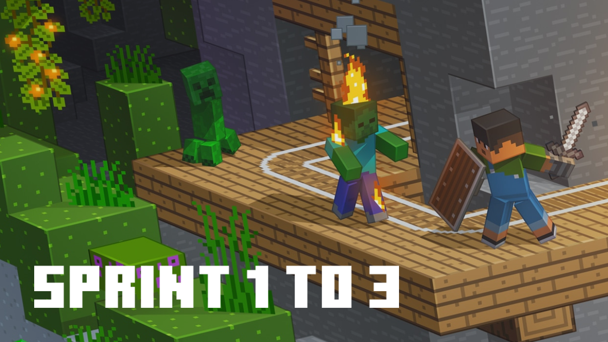

O Modly simplifica sua criação: hoje, um editor visual potente para Resource Packs (sem JSON!). Em breve, um Mod Studio completo para mecânicas e lógica, atualmente em desenvolvimento.
Uma interface moderna e intuitiva para criar resource packs profissionais para Minecraft Java Edition.
Canvas 16×16 e 32×32 com ferramentas de lápis, balde, borracha e conta-gotas. Paleta completa com as cores do Minecraft.
Para texturas grandes como GUI e mobs (64×256px). Abre como janela independente com zoom suave via scroll.
Renomeie itens, blocos, mobs, encantamentos e biomas. Suporte a pt_BR e en_US com mais de 200 chaves traduzíveis.
Gera um .zip pronto para instalar em .minecraft/resourcepacks com pack.mcmeta, texturas, idioma e ícone do pack.
Todas as texturas editadas aparecem como cards no Workspace para fácil acesso e re-edição sem perder o trabalho.
Nenhum arquivo é criado no disco até você exportar. Edite à vontade, tudo é mantido em memória durante a sessão.
O app está em desenvolvimento ativo. Novas funcionalidades são adicionadas regularmente.
Acompanhe o progresso do desenvolvimento, novas funcionalidades e anúncios importantes.

Grátis. Disponível para Windows.
O app está em desenvolvimento ativo e em breve estará disponível para download. Acompanhe o blog e o roadmap para saber quando o download será liberado.